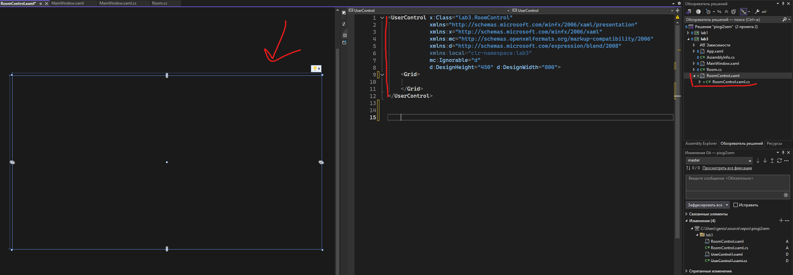
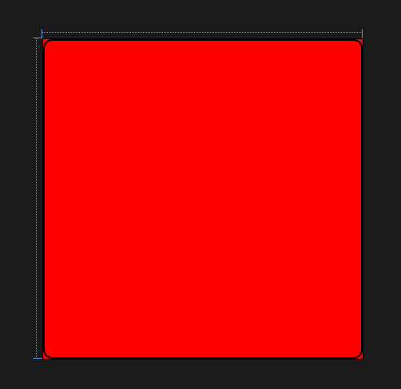

Пользовательский элемент управления
Чуть теории.
UserControl — класс пользовательских элементов управления в системе Windows Presentation Foundation (WPF).
Использование компонентов (UserControl, пользовательский элемент) группировка разметки и кода в контейнер для повторного использования. Благодаря этому один и тот же элемент интерфейса с определённой функциональностью может быть применён в нескольких разных местах и даже в нескольких приложениях.
UserControl может генерировать и обрабатывать события, как и любой другой элемент (Control). Это позволяет взаимодействовать с ним извне и реагировать на действия пользователя.
Стили и темы: UserControl можно стилизовать с помощью стилей и тем, что позволяет легко изменять внешний вид приложения.
Создание пользовательского элемента интерфейса.
Для создания пользовательского элемента управления нужно выполнить следующие шаги:
- Правой кнопкой мыши нужно кликнуть по названию проекта (НЕ РЕШЕНИЯ):
На скриншоте 1 решение имеет название "piogi2sem", а проект - "lab3".
{kind=link}
- Навести на меню "Добавить":
{kind=link}
- Выбрать пункт создать элемент:
{kind=link}
- Выбираем пункт "Пользовательский элемент управления" и указываем название нашего нового элемента:
{kind=link}
- После нажатия на кнопку "Добавить" элемент будет добавлен в проект, а в редакторе откроется окно с редактированием нашего элемента. 
{kind=link}
Добавление элементов на UserControl
В UserControl разметка пишется по аналогии с главным окном. Пример разметки:
<UserControl x:Class="lab3.RoomControl"
xmlns="http://schemas.microsoft.com/winfx/2006/xaml/presentation"
xmlns:x="http://schemas.microsoft.com/winfx/2006/xaml"
xmlns:mc="http://schemas.openxmlformats.org/markup-compatibility/2006"
xmlns:d="http://schemas.microsoft.com/expression/blend/2008"
xmlns:local="clr-namespace:lab3"
mc:Ignorable="d"
d:DesignHeight="200" d:DesignWidth="200"
Height="300" Width="300">
<!-- Контейнер с бордером -->
<Border Background="Gray" BorderBrush="Black" CornerRadius="10">
<Grid>
<!-- Определение строк в Grid -->
<Grid.RowDefinitions>
<RowDefinition Height="4*"/>
<RowDefinition Height="1.5*"/>
</Grid.RowDefinitions>
<!-- Панель с кнопкой -->
<StackPanel Grid.Row="0" HorizontalAlignment="Center" VerticalAlignment="Center">
<TextBlock Text="Название комнаты" FontSize="16"/>
<Button Content="Button" Style="{StaticResource btnGreen}" />
<Button Content="⚙️" Height="30" Width="30" Style="{StaticResource RoundButton}" />
</StackPanel>
<!-- Панель со слайдером и текстом -->
<StackPanel Grid.Row="1" Margin="5">
<TextBlock Text="Температура" HorizontalAlignment="Center"/>
<Slider Style="{StaticResource CustomSlider}"/>
</StackPanel>
</Grid>
</Border>
</UserControl>
Дизайнерский префикс d:.
В пользовательском элементе управления можно писать разметку практически точно также, как и в обычном окне.
В разметке можно заметить следующие строки:
Это статические свойства, которые предназначены исключительно для дизайнерского времени (в XAML-разметке для работы в Visual Studio или Blend для Visual Studio).
Эти свойства задают размеры элемента в дизайнере и используются только для того, чтобы правильно отображать компоненты на дизайнерской панели. Они не влияют на фактический рендеринг во время выполнения приложения.
Это означает, что в дизайнере элемент будет показываться с размерами 200x200, но в реальном приложении эти размеры могут быть совершенно другими.
До этого мы встречали только Height и Width. Это реальные свойства, которые определяют фактические размеры элемента во время работы приложения.
Эти свойства задают физические размеры элемента на экране при его рендеринге, и они влияют на отображение пользовательского интерфейса в момент работы приложения.
Эти свойства можно определить вместе:
<UserControl x:Class="lab3.RoomControl"
#Внимание
#тут кое чего не хватает и этот пример не заработает
d:DesignHeight="200" d:DesignWidth="200"
Height="300" Width="300"
/>
...
В таком случае в дизайнерском окне Visual Studio размеры элементы будут 200 на 200 пикселей. Но во время запуска приложения - его размеры будут строго фиксированы и равны 300 на 300 пикселей.
При создании пользовательский элемент является прозрачным
Мы можем использовать префикс d: для установки свойств только для отображения в окне дизайна.
d: — это префикс для дизайнерских атрибутов в XAML, которые используются исключительно в режиме разработки и не влияют на поведение приложения во время его работы.
Все атрибуты с префиксом d: используются только для отображения информации в дизайнере, чтобы разработчики могли лучше видеть, как будет выглядеть интерфейс. В коде программы эти атрибуты не учитываются.
Пример:
<Grid d:Background="Red">
<Border BorderBrush="Black" BorderThickness="1" CornerRadius="5"/>
<StackPanel>
</StackPanel>
</Grid>
Grid мы установили цвет фона на красный, но с префиксом d:. А Border без префикса. В дизайнере имеем такую "красоту":

{kind=link}
Но при компиляции и запуске программы мы красного фона не увидим, но граница останется:
{kind=link}